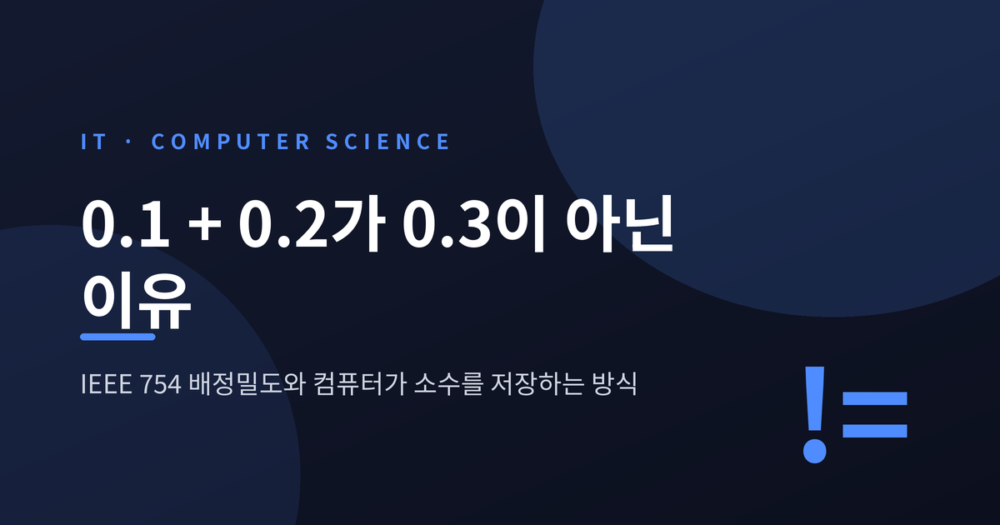
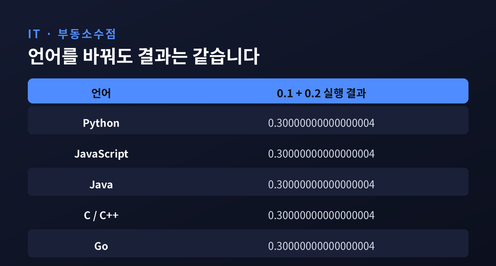
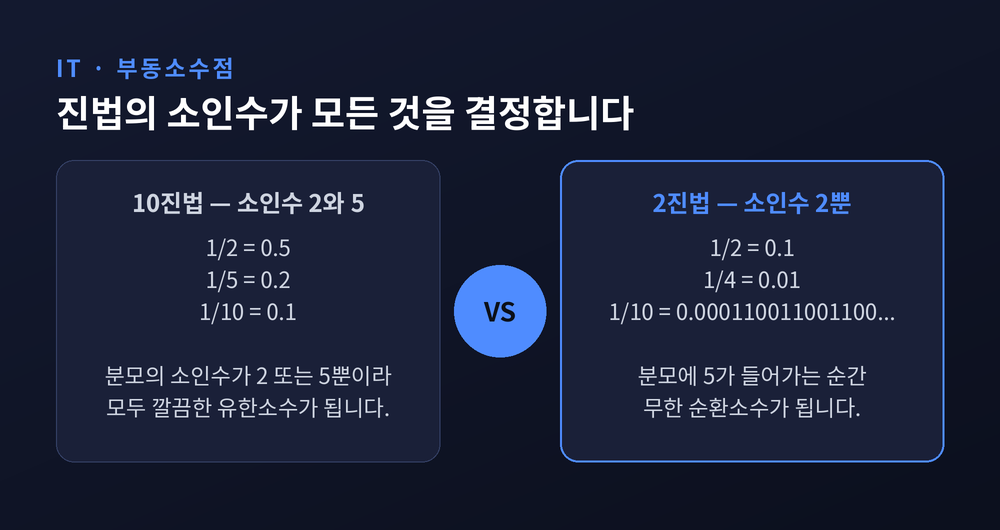
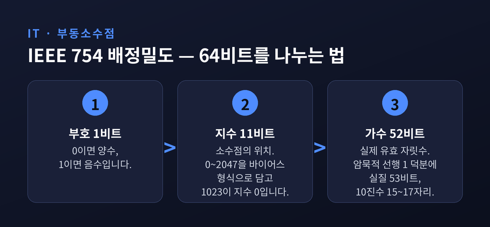
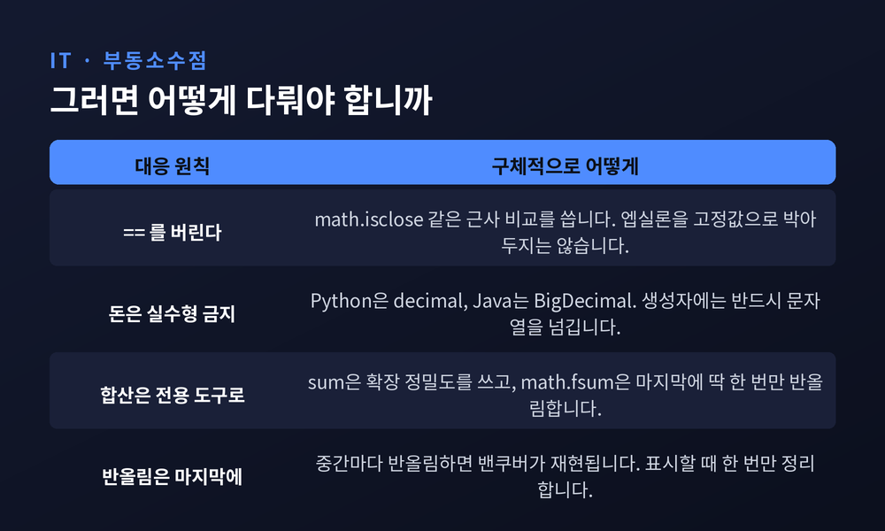

이번 글에서는 부동소수점이 왜 0.1 + 0.2를 0.3으로 계산하지 못하는지 정리해 보겠습니다. 결론부터 말씀드리면 이유는 세 가지입니다. 2진법으로는 0.1이 무한소수가 되고, 저장 공간은 64비트로 유한하며, 잘려나간 마지막 한 비트가 비교 연산을 뒤집습니다. 언어의 버그가 아니라 IEEE 754 표준의 구조에서 비롯된 결과입니다.
거의 모든 언어에서 0.1 + 0.2 == 0.3은 거짓을 반환합니다. 실제 출력값은 0.30000000000000004입니다.
Python 공식 문서도 같은 예시를 싣고 있습니다. 0.1 + 0.1 + 0.1 == 0.3의 결과 역시 False입니다. 미리 반올림해도 소용없습니다. round(0.1, 1)을 세 번 더해 round(0.3, 1)과 비교해도 여전히 False입니다.
이 지점에서 많은 분이 자기 코드를 의심합니다. 그럴 필요는 없습니다.
Python 문서는 이것이 파이썬의 버그도, 사용자 코드의 버그도 아니라고 못 박습니다. 하드웨어 부동소수점 연산을 쓰는 Perl, C, C++, Java, Fortran 모두 같은 결과를 냅니다. 일부 언어는 기본 출력 모드에서 차이를 표시하지 않을 뿐입니다.
0.30000000000000004.com이라는 사이트가 있을 정도입니다. 수십 개 언어에서 이 연산을 돌린 결과를 모아둔 곳입니다. 특정 언어의 문제가 아니라 표준의 문제라는 사실을 보여줍니다.

컴퓨터는 소수를 2진 분수로 저장합니다. 10진 분수 0.625가 6/10 + 2/100 + 5/1000이듯, 2진 분수 0.101은 1/2 + 0/4 + 1/8입니다. 값은 같고 표기 진법만 다릅니다.
여기서 규칙 하나가 작동합니다. 어떤 분수가 유한소수가 되려면 분모의 소인수가 그 진법의 소인수여야 합니다.
10진법의 소인수는 2와 5입니다. 그래서 1/2도, 1/5도, 1/10도 모두 깔끔하게 떨어집니다.
2진법의 소인수는 2 하나뿐입니다. 1/2, 1/4, 1/8은 문제없습니다. 그러나 분모에 5가 들어가는 1/5과 1/10은 무한 순환소수가 됩니다.
10진수 0.1을 2진법으로 적으면 이렇게 됩니다.
0.0001100110011001100110011001100110011001100110011...
끝이 없습니다. 10진법에서 1/3을 0.3, 0.33, 0.333으로 아무리 늘려 써도 정확히 1/3이 되지 않는 것과 같은 처지입니다. 2진법 앞에서 0.1이 딱 그렇습니다.

무한소수를 유한한 공간에 넣으려면 어디선가 잘라야 합니다. 그 공간의 규격이 IEEE 754입니다.
IEEE 754는 1985년 처음 제정됐고, 2008년 개정을 거쳐 현재 최신판은 2019년판입니다. Python 문서에 따르면 적어도 2000년 이후로는 사실상 모든 기계가 이 표준을 씁니다. 그리고 거의 모든 플랫폼이 실수형을 IEEE 754 배정밀도, 이른바 binary64에 대응시킵니다.
배정밀도 64비트는 이렇게 나뉩니다.
| 구획 | 비트 수 | 역할 |
|---|---|---|
| 부호 | 1비트 | 양수면 0, 음수면 1 |
| 지수 | 11비트 | 소수점의 위치 |
| 가수 | 52비트 | 실제 유효 자릿수 |
지수 11비트는 0부터 2047까지의 부호 없는 정수를 바이어스 형식으로 담습니다. 값 1023이 지수 0을 의미합니다. 실제 지수 범위는 −1022부터 +1023까지입니다. 양 끝의 −1023과 +1024는 0과 무한대, NaN 같은 특수값 표현용으로 예약돼 있습니다.
가수는 저장되는 것이 52비트지만 실질 정밀도는 53비트입니다. 정규화된 수의 맨 앞에는 반드시 1이 오기 때문에, 그 1은 아예 저장하지 않고 있다고 치는 것입니다. 암묵적 선행 1이라 부릅니다. 1비트를 공짜로 얻는 영리한 설계입니다.
이 53비트가 10진수로 환산하면 약 15~17자리 유효숫자에 해당합니다. 머신 엡실론은 2의 −52제곱, 약 2.22 × 10의 −16제곱입니다.

Python 공식 문서는 그 값을 정확히 유도해 보여줍니다.
0.1을 J를 53비트 정수로 하는 J / 2의 N제곱 꼴로 근사해야 합니다. J가 정확히 53비트가 되는 N은 56 하나뿐입니다. 2의 56제곱을 10으로 나누면 나머지가 6입니다. 10의 절반인 5보다 크므로 올림합니다.
그렇게 얻은 최선의 값이 7205759403792794 / 2의 56제곱이고, 약분하면 3602879701896397 / 2의 55제곱입니다.
이 분수를 10진수로 끝까지 펼치면 이렇습니다.
0.1000000000000000055511151231257827021181583404541015625
컴퓨터는 1/10을 한 번도 본 적이 없습니다. 컴퓨터가 보는 것은 처음부터 이 값이었습니다.
올림했기 때문에 저장값은 1/10보다 아주 조금 큽니다. 그리고 0.1과 0.10000000000000001과 위의 긴 숫자, 이 셋은 모두 같은 2진 근사값으로 수렴합니다.
예전엔 파이썬도 17자리 유효숫자인 0.10000000000000001을 출력했습니다. 지금은, 그러니까 3.1 버전부터는 같은 근사값을 공유하는 표기 중 가장 짧은 0.1을 골라 보여줍니다.
Python 문서는 이를 두고 "일종의 착시"라고 표현합니다. 화면에 보이는 것은 저장된 2진 근사값의 10진 근사값일 뿐입니다.
이제 실제로 더해지는 값들을 보시겠습니다.
| 우리가 쓴 값 | 실제 저장된 값 |
|---|---|
| 0.1 | 0.1000000000000000055511151231257827021181583404541015625 |
| 0.2 | 0.200000000000000011102230246251565404236316680908203125 |
| 합 | 0.3000000000000000444089209850062616169452667236328125 |
| 0.3 | 0.299999999999999988897769753748434595763683319091796875 |
핵심은 마지막 줄입니다. 0.1과 0.2만 부정확한 게 아닙니다. 0.3도 정확히 저장되지 않습니다.
두 근사값의 합은 0.3의 근사값보다 큽니다. 그래서 비교가 거짓이 됩니다.
차이의 크기를 16진 부동소수점 표기로 보면 더 선명합니다. 0.3은 0x1.3333333333333p-2이고, 0.1 + 0.2는 0x1.3333333333334p-2입니다. 마지막 자리가 3과 4, 딱 1비트 차이입니다.
오차가 커서 틀린 것이 아닙니다. 마지막 한 비트가 달라서 등호가 무너진 것입니다.
Python 문서는 이 오차가 대부분의 기계에서 연산당 2의 53제곱분의 1을 넘지 않는다고 설명합니다. 웬만한 작업에는 충분한 정밀도입니다. 다만 모든 부동소수점 연산이 새로운 반올림 오차를 낳을 수 있다는 점은 기억해야 합니다.
1991년 2월 25일, 사우디아라비아 다란의 미군 병영에 이라크의 스커드 미사일이 떨어졌습니다. 28명이 숨지고 약 100명이 다쳤습니다. 요격을 맡은 패트리엇 시스템은 발사되지 않았습니다.
원인은 지금까지 설명한 바로 그 문제였습니다. 내부 시계가 1/10초 단위로 카운트되는데, 이 값을 24비트 레지스터에 담았습니다. 1/10의 2진 표현은 무한 순환소수입니다. 24비트에서 잘라낸 미세한 오차가 매초 쌓였습니다.
100시간 가동 후, 시스템 시계는 약 0.34초 어긋나 있었습니다.
스커드의 속도는 초속 약 1,600미터입니다. 0.34초면 약 500미터를 갑니다. 계산된 추적 범위 이동량은 687미터였습니다. 패트리엇은 편차가 137미터를 넘으면 표적을 범위 밖으로 간주합니다.
시스템은 정상 작동했습니다. 다만 있지도 않은 곳을 보고 있었습니다.
돈으로 끝난 사례도 있습니다. 1982년 밴쿠버 증권거래소가 지수를 1000.000으로 출범시켰습니다. 지수 계산 코드의 딱 한 명령어가 반올림 대신 버림이었습니다. 셋째 자리에서 잘린 값이 다음 계산의 입력으로 다시 들어갔고, 갱신은 하루 약 3,000회였습니다.
22개월 뒤 지수는 약 524를 가리키고 있었습니다. 제대로 계산했다면 1009.811이어야 했습니다. 월평균 25포인트씩, 실재하지 않는 손실이 쌓인 셈입니다. 1983년 11월 마지막 주말에 바로잡자 지수는 하루아침에 1098.892로 뛰어올랐습니다.
성격이 조금 다른 사고도 짚어두겠습니다. 1996년 6월 4일 아리안 5 로켓은 발사 37초 만에 고도 약 3,700미터에서 폭발했습니다. 64비트 부동소수점 값을 16비트 정수로 변환하다 범위를 넘어선 것이 원인이었습니다. 아리안 4에서 그대로 가져온 코드였는데, 아리안 5의 속도값이 훨씬 컸습니다. 피해액은 약 5억 달러, 보험은 없었습니다. 이쪽은 반올림 오차라기보다 그릇의 크기를 잘못 고른 사고에 가깝습니다.
첫째, ==를 버립니다. Python이라면 math.isclose()가 있습니다. math.isclose(0.1 + 0.1 + 0.1, 0.3)은 True를 반환합니다.
다만 엡실론을 고정값으로 박아두는 방식은 권하지 않습니다. The Floating-Point Guide는 그 함정을 정확히 지적합니다. "작아 보인다"는 이유로 고른 엡실론은, 비교 대상이 아주 작은 수일 때는 너무 커서 전혀 다른 두 값을 같다고 판정합니다. 반대로 아주 큰 수일 때는 최소 반올림 오차보다도 작아져서 언제나 다르다고 판정합니다. 절대 오차와 상대 오차를 함께 보는 비교가 필요합니다.
둘째, 돈은 실수형으로 계산하지 않습니다. 금융 소프트웨어 쪽의 오랜 통설입니다. Python에는 회계용으로 decimal 모듈이, 유리수 연산이 필요하면 fractions 모듈이 표준으로 들어 있습니다.
Java의 BigDecimal을 쓰신다면 규칙이 몇 가지 있습니다.
new BigDecimal(0.1)은 이미 부정확해진 값을 받습니다. 반드시 문자열 생성자 new BigDecimal("0.1")을 씁니다.equals()가 아니라 compareTo()로 합니다.셋째, 합산에는 전용 도구가 있습니다. 0.1을 열 번 더해 1.0과 비교하면 False입니다. 그런데 sum([0.1] * 10) == 1.0은 True입니다. 파이썬의 sum()이 중간 반올림에 확장 정밀도를 쓰기 때문입니다. math.fsum()은 여기서 더 나아가 잃어버린 자릿수를 전부 추적해 마지막에 딱 한 번만 반올림합니다. 공식 문서의 극단적인 예시에서 단순 누적 덧셈은 정답 자릿수가 하나도 맞지 않았습니다.

한계를 인정하는 김에 반대쪽도 말씀드려야 공평하겠습니다.
병적인 경우가 존재하는 것은 사실입니다. 그러나 일상적인 계산에서는 최종 결과의 표시만 원하는 자릿수로 반올림하면 대개 기대한 값을 보게 됩니다. format(math.pi, '.2f')는 얌전히 3.14를 내놓습니다.
Python 공식 문서의 태도가 그래서 인상적입니다. 한참을 경고한 끝에 이렇게 덧붙입니다. "부동소수점을 지나치게 경계하지 마십시오."
정확한 값이 궁금하실 때 쓸 도구도 마련돼 있습니다. float.as_integer_ratio()는 정확한 분수를, float.hex()는 저장된 값의 16진 표기를 돌려줍니다. 특히 16진 표기는 값이 정확해서 Java나 C99처럼 같은 형식을 지원하는 언어와 데이터를 주고받을 때 유용합니다.
정리하면 이렇습니다.
0.1 + 0.2가 0.3이 아닌 이유는 셋입니다. 2진법에 소인수가 2뿐이라 0.1이 무한소수가 되고, 64비트라는 그릇이 그것을 53비트에서 자르고, 잘린 마지막 한 비트가 등호를 무너뜨립니다. 0.3 역시 정확히 저장되지 못한다는 점이 이 이야기의 반전입니다.
— 부동소수점은 정확한 값을 담는 그릇이 아니라, 정해진 예산 안에서 가장 가까운 값을 고르는 타협입니다.
이 사실을 알고 나면 코드를 다르게 쓰게 되냐고 물으신다면, 적어도 돈을 다루는 코드에서는 그렇다고 답하겠습니다.